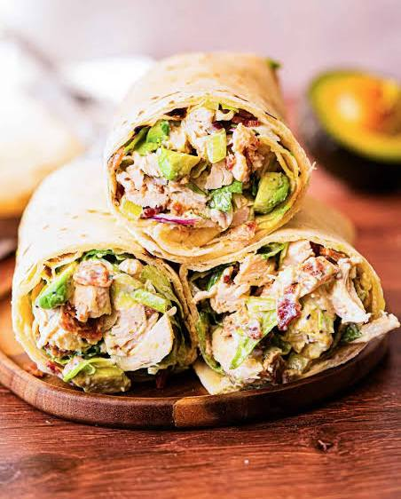

Avocado Wrap

Ingredients
- 1 whole-wheat tortilla
- 100 g grilled chicken breast, sliceds
- 1/2 ripe avocado, sliced
- 1/2 cup lettuce, shredded
- 2 tablespoons Greek yogurt (or light mayonnaise)
Method
- Prepare the Base: Lay the whole-wheat tortilla flat on a clean cutting board or plate.
- Spread the Sauce:Evenly spread the Greek yogurt or light mayonnaise across the middle section of the tortilla.
- Layer the Fillings:Place the shredded lettuce down the center. Top it with the sliced grilled chicken breast and avocado slices.
- Roll the Wrap: Fold in the left and right sides of the tortilla slightly, then roll it up tightly from the bottom to the top.
- Serve: Slice the wrap diagonally in half with a sharp knife and serve immediately.
Description
A refreshing, portable, and healthy wrap loaded with lean chicken, creamy avocado, and crunchy salad greens.